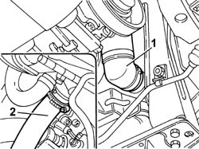
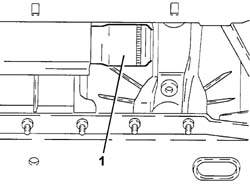
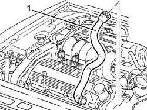

1088D10 LOWER radaitor coolant outlet HOSE - R.R.
- Path
- Procedures > 10 ENGINE > 1088 ENGINE COOLING > 1088D COOLANT HOSES AND PIPES > 1088D10 LOWER radaitor coolant outlet HOSE - R.R.
- Kind
- repair procedure (removal / refitting; the operation number is the code)
- Applies to
- engines: 2.0 TB, 2.4 20V, 3.0 V6, 3.2 V6; all production periods
- Interactive page
- https://sloeber94.github.io/elrnDB-lThss/en/#/75307
Applies to: engines: 2.0 TB, 2.4 20V; all production periods
 Removing
Removing
 Refitting
Refitting- Position the vehicle on a lift.
- Make sure that the ignition key is in the OFF position, then disconnect the negative battery terminal.
See in Op. 7040D50 ENGINE COMPARTMENT UPPER SOUND INSULATION SHIELD - R.R.
See in Op. 7055B54 PROTECTION/GUARD under engine - R.R.
1. Disconnect the lower coolant outlet hose from the radiator and drain the engine coolant; collect the coolant in a suitable container.
2. Disconnect the lower radiator coolant outlet hose from the pump coolant inlet connector and remove it.

Applies to: engines: 2.0 TB, 2.4 20V; all production periods
Refitting
Removing- Position the lower coolant outlet hose in its housing and connect it to the radiator using the rapid connector and to the pump coolant inlet connector using the retaining band.
See in Op. 0010T20 Engine REFRIGERANT FLUID - Change
See in Op. 7055B54 PROTECTION/GUARD under engine - R.R.
See in Op. 7040D50 ENGINE COMPARTMENT UPPER SOUND INSULATION SHIELD - R.R.
- Connect the negative battery lead.
- Remove the vehicle from the lift.
Applies to: engines: 3.0 V6, 3.2 V6; all production periods
Removing
Refitting- Position the vehicle on a lift.
See in Op. 7055B54 PROTECTION/GUARD under engine - R.R.
1. Disconnect the radiator side lower radiator hose.

Applies to: engines: 3.0 V6, 3.2 V6; all production periods
See in Op. 7040D30 Engine compartment FRONT CROSSMEMBER COVER - R.R.
See in Op. 7040D50 ENGINE COMPARTMENT UPPER SOUND INSULATION SHIELD - R.R.
See in Op. 1048A28 vacuum air circuit resonator pipe - r+r
1. Disconnect the lower radiator hose from the thermostat and remove it.

Applies to: engines: 3.0 V6, 3.2 V6; all production periods
Refitting
Removing- Fit the lower radiator hose and connect it to the thermostat.
See in Op. 1048A28 vacuum air circuit resonator pipe - r+r
See in Op. 7040D50 ENGINE COMPARTMENT UPPER SOUND INSULATION SHIELD - R.R.
See in Op. 7040D30 Engine compartment FRONT CROSSMEMBER COVER - R.R.
-
- Connect the lower radiator hose to the radiator.
See in Op. 7055B54 PROTECTION/GUARD under engine - R.R.
See in Op. 0010T20 Engine REFRIGERANT FLUID - Change
- Remove the vehicle from the lift.